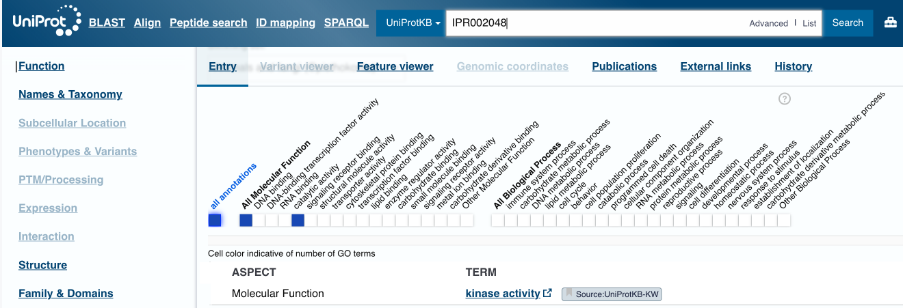
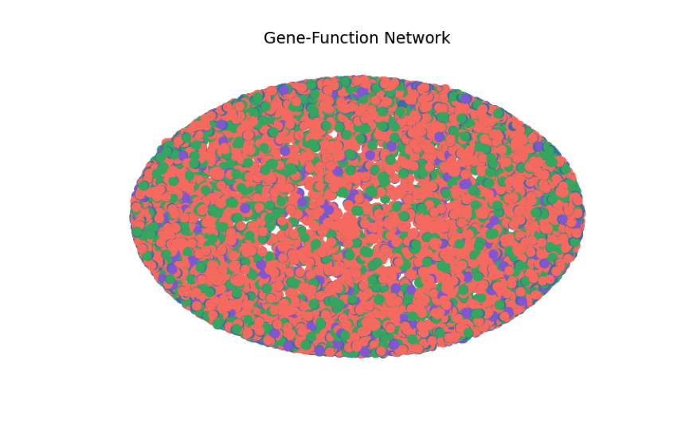
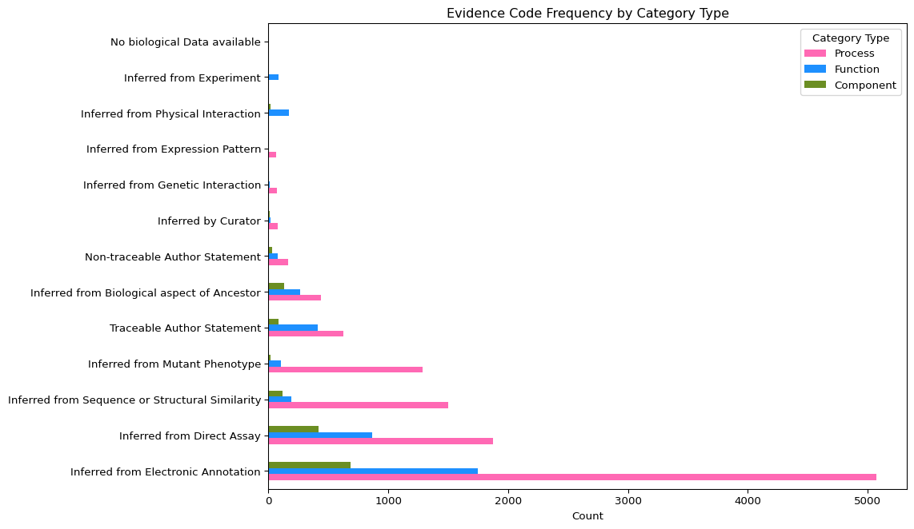
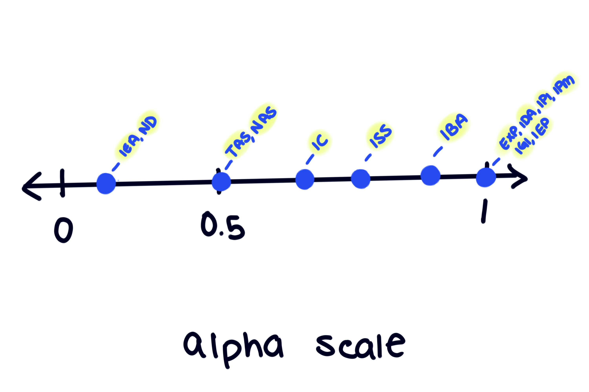

import networkx as nx
import matplotlib.pyplot as plt
import pandas as pd
import numpy as npDATA620-Project 1
Project 1: Categorical Groups and Centrality in Gene Ontology Data
Data Load
In this first project, I will use SNAP data titled Gene Function Association Network. The dataset contains an association network of over 22k nodes and over 16k edges for gene function. The edges are meant describe what a gene does.
genes=pd.read_csv("GF-Miner_miner-gene-function.tsv", sep= "\t")
genes.head()| # GO_ID | C0 | C1 | Gene | C3 | C5 | C6 | C7 | C8 | C9 | C10 | C11 | C12 | C13 | C14 | C15 | C16 | |
|---|---|---|---|---|---|---|---|---|---|---|---|---|---|---|---|---|---|
| 0 | GO:0005509 | UniProtKB | A0A024QZ42 | PDCD6 | NaN | GO_REF:0000002 | IEA | InterPro:IPR002048 | F | HCG1985580, isoform CRA_c | A0A024QZ42_HUMAN|PDCD6|hCG_1985580 | protein | taxon:9606 | 20160409 | InterPro | NaN | NaN |
| 1 | GO:0004672 | UniProtKB | A0A024QZP7 | CDK1 | NaN | GO_REF:0000002 | IEA | InterPro:IPR000719|InterPro:IPR002290|InterPro... | F | Cyclin-dependent kinase 1 | A0A024QZP7_HUMAN|CDK1 | protein | taxon:9606 | 20160409 | InterPro | NaN | NaN |
| 2 | GO:0005524 | UniProtKB | A0A024QZP7 | CDK1 | NaN | GO_REF:0000038 | IEA | UniProtKB-KW:KW-0067 | F | Cyclin-dependent kinase 1 | A0A024QZP7_HUMAN|CDK1 | protein | taxon:9606 | 20160410 | UniProt | NaN | NaN |
| 3 | GO:0005634 | UniProtKB | A0A024QZP7 | CDK1 | NaN | GO_REF:0000052 | IDA | NaN | C | Cyclin-dependent kinase 1 | A0A024QZP7_HUMAN|CDK1 | protein | taxon:9606 | 20101115 | HPA | NaN | NaN |
| 4 | GO:0005737 | UniProtKB | A0A024QZP7 | CDK1 | NaN | GO_REF:0000052 | IDA | NaN | C | Cyclin-dependent kinase 1 | A0A024QZP7_HUMAN|CDK1 | protein | taxon:9606 | 20101115 | HPA | NaN | NaN |
As much as I enjoy hearing about molecular world, I’m nonetheless unfamiliar with its many intricacies; particularly in the field of Genomics. The variables in the dataset are labeled alphanumerically. This format does’t explain or hint at the meaning of the observations, so it’s not accessible for those unfamiliar with the subject matter. I’ll need to research the datapoints in order to understand the variables as there is also no data dictionary. All of the columns will require renaming for clarity.
Before I begin researching, let’s check out how many groups and NA values in each column:
#-- organizing overview--
overview= (
genes
.agg(["nunique", lambda x: x.isna().sum()])
.T
)
#-- renaming summary columns for clarity--
#-- and the index because I prefer it this way--
overview=overview.reset_index()
overview.columns=["variable", "unique", "NA count"]
overview| variable | unique | NA count | |
|---|---|---|---|
| 0 | # GO_ID | 16628 | 0 |
| 1 | C0 | 3 | 0 |
| 2 | C1 | 6676 | 0 |
| 3 | Gene | 5957 | 0 |
| 4 | C3 | 5 | 16407 |
| 5 | C5 | 4742 | 0 |
| 6 | C6 | 13 | 0 |
| 7 | C7 | 6160 | 6106 |
| 8 | C8 | 3 | 0 |
| 9 | C9 | 6006 | 0 |
| 10 | C10 | 6660 | 36 |
| 11 | C11 | 3 | 0 |
| 12 | C12 | 17 | 0 |
| 13 | C13 | 2213 | 0 |
| 14 | C14 | 22 | 0 |
| 15 | C15 | 525 | 15961 |
| 16 | C16 | 76 | 16494 |
There are several columns with many NA; C3, C7, C10, C15, C16 are all flagged. In the interest of time, I will likely impute NA values, but I do want to acknowledge the context of the NA values first. There are several columns I’m sure I wont need, so I will remove them now.
My main focus here is human data. Although the column has no missing values, all datapoints in C12 include humans, so I am sure it will not be needed. I won’t need the PubMed identifiers in C13, and I won’t need the Ontology Resource Names in C14.
#-- removing column not needed--
genes= genes.drop(columns=["C12"])
genes= genes.drop(columns=["C13"])
genes= genes.drop(columns=["C14"])Creating a Data Dictionary
To create this dictionary I have sampled random datapoint within each column and researched them until I found consensus. For example, C8 is a category/type. I searched “Gene Ontology F, C, P” and found Go Enrichment Analysis Tools. The site describes how the gene ontology tool is used and they explain that a “GO Aspect” may be selected and these are “molecular function”, “cellular component”, and “biological process”. I went back and searched up the corresponding IDs for my randomly chosen rows to confirm their listed “Aspect” matched their line in C8. I renamed the column as category_type instead of aspect because I just preferred it.

Now, let’s modify the column names to be slightly more descriptive:
genes.columns=["go_id", "database", "gene_id", "gene_name", "action", "ref", "evidence_code", "ex_ref", "category_type", "encode_name", "encoder", "func_type", "action_on_entity", "db_ref"]
genes.head()| go_id | database | gene_id | gene_name | action | ref | evidence_code | ex_ref | category_type | encode_name | encoder | func_type | action_on_entity | db_ref | |
|---|---|---|---|---|---|---|---|---|---|---|---|---|---|---|
| 0 | GO:0005509 | UniProtKB | A0A024QZ42 | PDCD6 | NaN | GO_REF:0000002 | IEA | InterPro:IPR002048 | F | HCG1985580, isoform CRA_c | A0A024QZ42_HUMAN|PDCD6|hCG_1985580 | protein | NaN | NaN |
| 1 | GO:0004672 | UniProtKB | A0A024QZP7 | CDK1 | NaN | GO_REF:0000002 | IEA | InterPro:IPR000719|InterPro:IPR002290|InterPro... | F | Cyclin-dependent kinase 1 | A0A024QZP7_HUMAN|CDK1 | protein | NaN | NaN |
| 2 | GO:0005524 | UniProtKB | A0A024QZP7 | CDK1 | NaN | GO_REF:0000038 | IEA | UniProtKB-KW:KW-0067 | F | Cyclin-dependent kinase 1 | A0A024QZP7_HUMAN|CDK1 | protein | NaN | NaN |
| 3 | GO:0005634 | UniProtKB | A0A024QZP7 | CDK1 | NaN | GO_REF:0000052 | IDA | NaN | C | Cyclin-dependent kinase 1 | A0A024QZP7_HUMAN|CDK1 | protein | NaN | NaN |
| 4 | GO:0005737 | UniProtKB | A0A024QZP7 | CDK1 | NaN | GO_REF:0000052 | IDA | NaN | C | Cyclin-dependent kinase 1 | A0A024QZP7_HUMAN|CDK1 | protein | NaN | NaN |
Now our NA overview will be more readable:
overview= (
genes
.agg(["nunique", lambda x: x.isna().sum()])
.T)
overview=overview.reset_index()
overview.columns=["variable", "unique", "NA count"]
overview| variable | unique | NA count | |
|---|---|---|---|
| 0 | go_id | 16628 | 0 |
| 1 | database | 3 | 0 |
| 2 | gene_id | 6676 | 0 |
| 3 | gene_name | 5957 | 0 |
| 4 | action | 5 | 16407 |
| 5 | ref | 4742 | 0 |
| 6 | evidence_code | 13 | 0 |
| 7 | ex_ref | 6160 | 6106 |
| 8 | category_type | 3 | 0 |
| 9 | encode_name | 6006 | 0 |
| 10 | encoder | 6660 | 36 |
| 11 | func_type | 3 | 0 |
| 12 | action_on_entity | 525 | 15961 |
| 13 | db_ref | 76 | 16494 |
Creating a Graph
The data does specify that the edges are the functional annotations and nodes are the go_id and gene_name. In this project however we’ll use category_type and database as our categorical groups because each variable is perfect with only 3 distinct values.
I think category_type will have interesting centrality within its groups. Biological Process will presumably have many connections. Molecular functions should be second best. Cellular Component would presumably . and
This graph will be undirected because we’re exploring mutual connection. Action had far to many NA values (which could very well mean there is no action to be had). Well, I might as well check out the denomination of that, while we’re on the topic.
#--grabbing the points needed--
na_actions= genes[genes["action"].isna()]
cat_total= genes.groupby(["category_type"]).size().reset_index(name="count")
na_counts= na_actions.groupby(["category_type"]).size().reset_index(name="na_count")
#--neat df--
summary_denom= pd.merge(na_counts, cat_total, on="category_type")
summary_denom["na_percent"]= (summary_denom["na_count"]/summary_denom["count"]*100).round(2)
summary_denom| category_type | na_count | count | na_percent | |
|---|---|---|---|---|
| 0 | C | 1463 | 1508 | 97.02 |
| 1 | F | 3841 | 3944 | 97.39 |
| 2 | P | 11103 | 11176 | 99.35 |
There doesn’t seem to be much difference in the categories, in terms of the NA values within the action column. Over 90% of values are NA, but judging by the sheer volume and attention to detail of Genomic data– its very likely there is no immediate action from the genes marked as such. I thought to keep the action column and use an “if” function to display action when available, however, this action column would classify as directional. The rest of my data is best in an undirected graph depicting relationships. For the sake of simplicity and time, I will choose to drop the action column.
genes= genes.drop(columns=["action", "ex_ref", "action_on_entity", "db_ref", "encoder"])gg1= nx.Graph()I ran a preliminary graph and as its pictured below, it is far to dense to be readable. I will take a stratified sample of my data to maintain the original balance of the categorical values in genes.

#--stratified sample--
sample= genes.groupby("category_type", group_keys=False).sample(frac= 0.05)
gg1.add_edges_from(sample[["gene_name", "evidence_code"]].values)
gg1.add_edges_from(sample[["evidence_code", "go_id"]].values)
gg1.add_edges_from(sample[["go_id", "category_type"]].values)Now that the data is ready for visualization. I want to solidify what it is I want to see in the graph. The vantage point I’m looking to take will include a variable I elaborated most on in the data dictionary I created earlier. evidence_codes are notes on the function of a gene. There are 26 unique codes in existence under 6 categories. The gene data i am using only has 13 unique codes after NA removal.
Whats important about this?
The evidence codes can be depicted by alpha levels because there is a credibility hierarchy to them. “Non-traceable author statements” have less credibility than functions indicated from an actual experiment. So the shade of our graph will be linked to how
As much as visualization is worth, values are sometimes easier to understand. I’ll map the code acronyms for clarity.
Intermission: Values and Regular Plot
ec_names= {"IEA": "Inferred from Electronic Annotation",
"IDA": "Inferred from Direct Assay",
"ISS": "Inferred from Sequence or Structural Similarity",
"IMP": "Inferred from Mutant Phenotype",
"IPI": "Inferred from Physical Interaction",
"TAS": "Traceable Author Statement",
"ND": "No biological Data available",
"IBA": "Inferred from Biological aspect of Ancestor",
"IEP": "Inferred from Expression Pattern",
"EXP": "Inferred from Experiment",
"NAS": "Non-traceable Author Statement",
"IGI": "Inferred from Genetic Interaction",
"IC": "Inferred by Curator"}
cta_types= {"P": "Process","F": "Function", "C": "Component"}#-- Mapping Evidence Names--
genes["evidence_names"]= genes["evidence_code"].map(ec_names)
#-- Mapping Aspect/ Category Types--
genes["aspect"]= genes["category_type"].map(cta_types)Below is a table of evidence codes and how they’re distributed within each category:
cred_count= genes.groupby(["aspect", "evidence_names"]).size().reset_index(name="count").sort_values(["aspect", "count"], ascending= [True,False])A visual for thoroughness:
#--Pivotting because of the long labels--
piv_cred_count= cred_count.pivot(index="evidence_names", columns="aspect", values="count").fillna(0)
piv_cred_count= piv_cred_count[["Process", "Function", "Component"]]
piv_cred_count= piv_cred_count.sort_values(by="Process", ascending=False)
ax= piv_cred_count.plot(kind="barh",figsize=(12,7),
color= ["hotpink", "dodgerblue", "olivedrab"])
ax.set_xlabel("Count")
ax.set_ylabel("")
ax.set_title("Evidence Code Frequency by Category Type")
ax.legend(title= "Category Type")
plt.tight_layout()
plt.show()
Credibility
I’m scoring the evidence types as follows:

Those under experimental evidence will be graded as 1 such as EXP, IDA, IPI, IPM , IGI, and IEP . The lowest value should still be visible so 0.2 will be assigned to IEA and ND.
alpha_map= {"IEA": 0.2,"ND": 0.2,"TAS": 0.5,"NAS": 0.5,"IC": 0.6,"ISS": 0.7,"IBA": 0.8,"EXP": 1.0,"IDA": 1.0,"IPI": 1.0, "IGI": 1.0,"IMP": 1.0,"IEP": 1.0}Centrality
Even in my sample there are a lot of datapoints which will lead to another unreadable network clump. Centrality and eigenvector centrality will help identify which nodes are the most connected and which of those matter.
centrality= nx.degree_centrality(gg1)
eig_centrality= nx.eigenvector_centrality(gg1, max_iter=2000)
#-- creating new columns for centrality--
gene_centrality= (sample[["gene_name"]].drop_duplicates())
gene_centrality["degree_centrality"]= gene_centrality["gene_name"].map(centrality)
gene_centrality["eigen_centrality"]= gene_centrality["gene_name"].map(eig_centrality)
#-- isolating top genes--
top_genes= gene_centrality.sort_values("eigen_centrality",ascending=False).head(10)top_sample= sample[sample["gene_name"].isin(top_genes["gene_name"])]The Graph
#-- edges--
gg1.add_edges_from(top_sample[["gene_name", "evidence_code"]].values)
gg1.add_edges_from(top_sample[["evidence_code", "go_id"]].values)
gg1.add_edges_from(top_sample[["go_id", "category_type"]].values)
#--node gruops--
gene_nodes= set(top_sample["gene_name"])
evidence_nodes= set(top_sample["evidence_code"])
go_nodes= set(top_sample["go_id"])
category_nodes= set(top_sample["category_type"])#-- assigning my customizations--
pos= nx.spring_layout(gg1, seed=30)
node_colors= []
for node in gg1.nodes():
if node in evidence_nodes:
alpha = alpha_map.get(node, 1)
node_colors.append((0.5,0.5,0.5, alpha))
else:
node_colors.append((0.5,0.5,0.5,1))#-- drawing the graph--
plt.figure(figsize=(35,30), dpi=300)
nx.draw_networkx_edges(gg1, pos, alpha=0.3)
nx.draw_networkx_nodes(gg1, pos, node_color=node_colors)
plt.title("GO Annotation Network")
plt.axis("off")
plt.show()
References
Matplotlib List of Named colors:
https://matplotlib.org/stable/gallery/color/named_colors.html